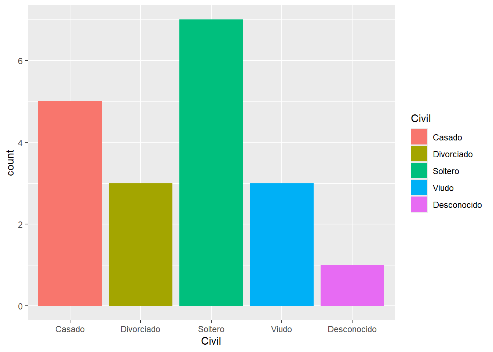
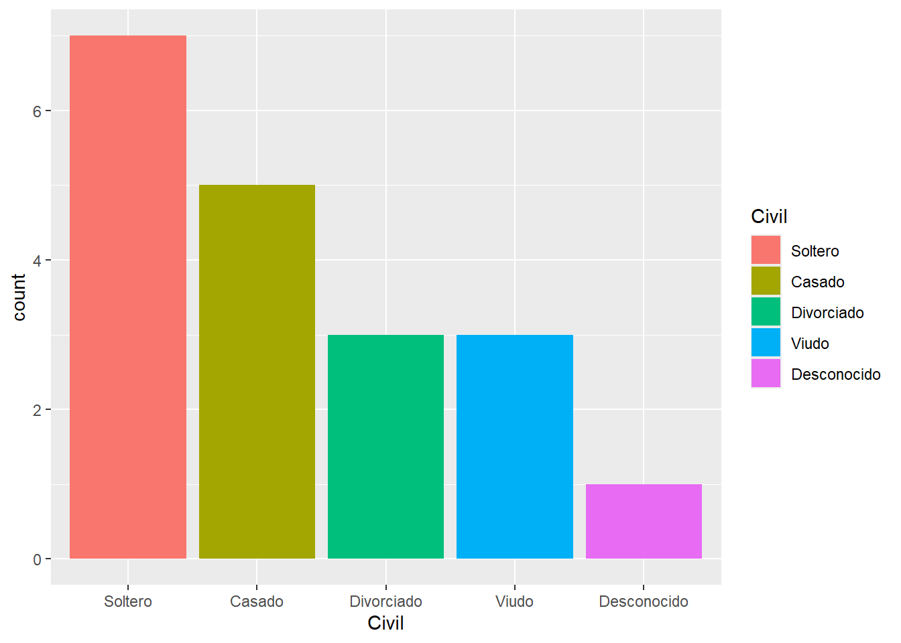

mdy("01-24-2024")[1] "2024-01-24"Los eventos epidemiológicos se presentan en algun momento del tiempo, por lo que las variables de tiempo son habituales componentes de las bases de datos con las que trabaja un epidemiólogo. Estas variables pueden presentarse en distintas unidades de medida, tales como horas, días, años, decadas, etc.
A veces trabajar con datos tipo fecha y hora puede ser frustrante.Las fechas vienen en muchos formatos diferentes, que hace que reconocerlos y analizarlos sea un desafío.
Primero necesitamos que los datos sean reconocidos como formato fecha (Date) y luego debemos lidiar con operaciones específicas como extraer componentes de los horarios, como años, meses o segundos, o cambiar zonas horarias o hacer cálculos entres fechas.
Para simplificar esta tarea tidyverse trae el paquete lubridate que proporciona herramientas para manipular variables fecha-hora.
Específicamente, lubridate ayuda a los usuarios a:
lubridate se instala y activa con tidyverse:
Podemos leer fechas en R usando la serie de funciones ymd() proporcionada por este paquete. Estas funciones analizan el contenido de cadenas de caracteres y las transforman a fechas.
Las letras y, m y d corresponden al año, mes y día de una fecha. Para leer una fecha, seleccionamos el nombre de la función que coincide con el orden de los elementos contenidos en el objeto original. Por ejemplo, en la siguiente fecha el elemento mes viene primero, seguido por el día y luego el año, al estilo estadounidense. Entonces usaríamos la función mdy():
mdy("01-24-2024")[1] "2024-01-24"El formato de salida siempre año-mes-día, es decir se organiza del elemento más grande que anida a los otros.
Si en cambio tuviese la forma en que usamos las fechas nosotros, usaríamos dmy().
dmy("24-01-2024")[1] "2024-01-24"Como se observa el formato de los caracteres de entrada pueden utilizar distintos separadores, como guión medio (-), punto (.), barra inclinada (/), guión bajo (_) o incluso espacios.
La clase de los objetos convertidos es Date.
x <- dmy("24/01/2024")
class(x)[1] "Date"| Orden de los elementos | Función |
|---|---|
| año, mes y día | ymd() |
| año, día y mes | ydm() |
| mes, día y año | mdy() |
| día, mes y año | dmy() |
| hora y minuto | hm() |
| hora, minuto y segundo | hms() |
| año, mes, día, hora, minuto y segundo | ymd_hms() |
Las funciones que tienen componente de hora crean objetos POSIXct.
Cuando una función dmy() se aplica a un vector de fechas, lubridate supone que todas las fechas tienen el mismo orden y los mismos separadores.
Cada estructura fecha-hora es una combinación de diferentes elementos, cada uno con su propio valor. Por ejemplo, la mayoría de las fechas incluyen un valor de año, un valor de mes, un valor de día, etc. Juntos estos elementos especifican el momento exacto al que se refiere la fecha y la hora.
Podemos extraer fácilmente cada elemento de una fecha-hora con la función de acceso que tiene su nombre, como se muestra en la siguiente tabla.
| Componente de fecha | Función |
|---|---|
| Año | year() |
| Mes | month() |
| Semana | week() |
| Día del año | yday() |
| Día del mes | mday() |
| Día de la semana | wday() |
| Hora | hour() |
| Minuto | minute() |
| Segundo | second() |
| Zona horaria (huso horario) | tz() |
Por ejemplo, si almacenamos la fecha y hora actual del sistema en un objeto:
fecha <- now()
fecha[1] "2026-01-06 08:24:41 -03"podemos extraer cada uno de sus elementos.
Tengamos en cuenta que la función now(), perteneciente al mismo paquete lubridate, devolverá una fecha diferente cada vez que se ejecute.
year(fecha)[1] 2026mday(fecha)[1] 6hour(fecha)[1] 8minute(fecha)[1] 24Para los elementos de mes y día de la semana (wday), también podemos especificar si queremos extraer el valor numérico del elemento, una abreviatura del nombre del mes o día de la semana, o el nombre completo.
Por ejemplo:
month(fecha)[1] 1month(fecha, label = TRUE)[1] ene
12 Levels: ene < feb < mar < abr < may < jun < jul < ago < sep < ... < dicmonth(fecha, label = TRUE, abbr = FALSE)[1] enero
12 Levels: enero < febrero < marzo < abril < mayo < junio < ... < diciembrewday(fecha, label = TRUE, abbr = FALSE)[1] martes
7 Levels: domingo < lunes < martes < miércoles < jueves < ... < sábadoOtra buena noticia es que el paquete se adapta al formato regional del sistema operativo donde se encuentra funcionando, por lo que los nombres de los meses o los días de la semana, en este caso, figuran en español (si nuestro sistema operativo está instalado bajo ese idioma).
Por otra parte, también podemos usar cualquiera de las funciones de acceso para establecer el valor de un elemento. Por ejemplo,
fecha[1] "2026-01-06 08:24:41 -03"day(fecha) <- 5
fecha[1] "2026-01-05 08:24:41 -03"cambia nuestra fecha al quinto día del mes. También podemos configurar los elementos para más valores complicados, por ejemplo:
fechas <- ymd_hms("2017-01-01 01:00:00", "2017-01-01 01:30:00")
minute(fechas) <- mean(minute(fechas))
fechas # promedió los minutos en los dos casos[1] "2017-01-01 01:15:00 UTC" "2017-01-01 01:15:00 UTC"Si asignamos a un elemento un valor mayor de lo admitido, la diferencia se extenderá en el siguiente elemento superior (respetando la cantidad de días del mes de mayo adecuadamente en este caso.)
fecha[1] "2026-01-05 08:24:41 -03"day(fecha) <- 35
fecha[1] "2026-02-04 08:24:41 -03"Finalmente, también podemos cambiar las fechas agregando o restando unidades de tiempo.
fecha[1] "2026-02-04 08:24:41 -03"fecha <- fecha + hours(3)
fecha[1] "2026-02-04 11:24:41 -03"Observemos que hours() (plural) no es la misma función que hour() (singular).
Por último, algo muy útil para nuestro trabajo es poder extraer la semana epidemiologica, con la función epiweek(), en la que cae una fecha en particular o un conjunto de ellas dentro de una variable.
epiweek(fecha)[1] 5Junto con la semana epidemiológica se puede obtener el año epidemiológico con la función epiyear()
Por ejemplo, la fecha 01/01/2022 es el primer día de enero de 2022 pero pertenece a la semana epidemiológica 52 de año 2021. Veamos:
fecha <- dmy("01-01-2022")
fecha[1] "2022-01-01"epiweek(fecha)[1] 52Si uno obtiene el año al que pertenece, nos dice que 2022 pero si lo queremos asociar con su semana epidemiológica, nos quedaría que estamos en la semana 52 del año 2022, cosa que no es cierta.
year(fecha)[1] 2022En estas situaciones que no coinciden el año de la fecha con el año epidemiológico de la semana es que se aplica epiyear().
epiyear(fecha)[1] 2021Los cálculos con fechas y horas son más complicados que la aritmética con números, pero puede hacerse con precisión y facilidad mediante este paquete.
¿Qué es lo que complica a la aritmética con datos de tiempo (fechas u horas)?
El tiempo que medimos en el reloj se calibra periódicamente para ajustar las condiciones astronómicas, por caso los años bisiestos o los horarios de verano que se utilizan en muchos países.
En diferentes momentos, la duración de meses, semanas, días, horas e incluso minutos puede variar. Por lo tanto, podemos considerar que son unidades relativas de tiempo; su longitud es relativa a cuando ocurren; por el contrario, los segundos siempre tienen una longitud constante (son unidades de tiempo exactas)
lubridate permite cálculos con unidades relativas y exactas introduciendo cuatro nuevos elementos relacionados: instantes, intervalos, duraciones y períodos. Estos conceptos son tomados del proyecto Joda Time (Colebourne y O’Neill 2010). Conceptos similares para instantes, períodos y duraciones también aparecen en la biblioteca C++ Boost - Date Time (Garland 2011).
lubridate proporciona funciones auxiliares, clases de objetos y métodos para usar los cuatro conceptos en el lenguaje R.
Un instante es un momento específico en el tiempo, como el 1 de enero de 2024. Creamos un instante cada vez que convertimos una fecha a formato Date de R.
start_2024 <- ymd_hms("2024-01-01 12:00:00")lubridate no crea una nueva clase de objetos instantes. En cambio, reconoce cualquier objeto de fecha y hora como un instante. Podemos probar si un objeto es un instante usando el identificador is.instant(). Por ejemplo:
is.instant(start_2024)[1] TRUELos intervalos, duraciones y períodos son todas formas de registrar tiempos. De estos, los intervalos son los más simples. Un intervalo es un lapso de tiempo que ocurre entre dos instantes específicos.
Podemos crear objetos de intervalo restando dos instantes, mediante %–% o usando la función new_interval().
start_2023 <- ymd_hms("2023-01-01 12:00:00")
start_2024 <- ymd_hms("2024-01-01 12:00:00")
intervalo <- start_2023 %--% start_2024
intervalo[1] 2023-01-01 12:00:00 UTC--2024-01-01 12:00:00 UTCPodemos acceder a las fechas de inicio y finalización de un objeto de intervalo con int_start() e int_end().
Los intervalos siempre comienzan en la fecha y hora que ocurre primero y finaliza en la fecha y hora que ocurre último. Por lo tanto, los intervalos siempre tienen una longitud positiva.
int_start(intervalo)[1] "2023-01-01 12:00:00 UTC"int_end(intervalo)[1] "2024-01-01 12:00:00 UTC"Desafortunadamente, dado que los intervalos están anclados a sus fechas de inicio y finalización, no son muy útiles para cálculos de fecha y hora.
Si eliminamos las fechas de inicio y finalización de un intervalo, tendremos un intervalo de tiempo genérico que podemos agregar a cualquier fecha. Pero, en que unidad es conveniente medir este período de tiempo? Como vimos anteriormente, si lo almacenamos en segundos, tendrá una longitud exacta ya que los segundos siempre tienen la misma longitud.
Llamamos duraciones de estos lapsos de tiempo. Alternativamente, podemos registrar el lapso de tiempo en unidades más grandes, como minutos o años.
Dado que la longitud de estas unidades varía con el tiempo, la longitud exacta de el lapso de tiempo dependerá de cuándo comience. Estos períodos de tiempo no exactos se llaman períodos y será discutido en la siguiente sección.
La duración de una duración es invariable para saltar años, segundos intercalares y horario de verano porque las duraciones se miden en segundos.
Por lo tanto, las duraciones tienen longitudes consistentes y se puede comparar fácilmente con otras duraciones. Las duraciones son el objeto apropiado para usar cuando se comparan atributos basados en tiempo, como velocidades, tasas y tiempos de vida.
El paquete base de R tiene definido a objetos de tipo duración en la clase difftime.
lubridate incorpora un segundo tipo: objetos clase duration
Estos objetos se pueden usar con otros objetos de fecha y hora sin preocuparse sobre en qué unidades se muestran. Se puede crear un objeto de duración con la función duration():
duration(60)[1] "60s (~1 minutes)"Para duraciones grandes, resulta inconveniente describir la longitud en segundos. Por ejemplo, no muchas personas reconocerían que 31557600 segundos es la duración de un año estándar. Por esta razón, los objetos de gran duración son seguidos entre paréntesis por una longitud estimada. Un minuto son 60 segundos, una hora 3600 segundos, un día 86400, una semana 604800 y un año 31557600 (365.25 días).
Los objetos de clase duration se pueden crear fácilmente con las funciones auxiliares dyears(), dweeks(), ddays(), dhours(), dminutes() y dseconds(). La d en el nombre representa duración.
Cada objeto se crea tomando como unidad los segundos usando las relaciones estimadas descriptas arriba. El argumento de cada función es el número de unidades estimadas que deseamos incluir en la duración.
dminutes(1)[1] "60s (~1 minutes)"dseconds(60)[1] "60s (~1 minutes)"dminutes(2)[1] "120s (~2 minutes)"1:3 * dhours(1)[1] "3600s (~1 hours)" "7200s (~2 hours)" "10800s (~3 hours)"Las duraciones se pueden agregar o restar a cualquier objeto instante.
start_2024[1] "2024-01-01 12:00:00 UTC"start_2024 + ddays(10)[1] "2024-01-11 12:00:00 UTC"Las duraciones también se pueden agregar o restar de intervalos y otras duraciones. Por ejemplo:
dweeks(1) + ddays(6) + dhours(2) + dminutes(1.5) + dseconds(3)[1] "1130493s (~1.87 weeks)"También podemos crear duraciones a partir de objetos intervalo y períodos usando as.duration().
as.duration(intervalo)[1] "31536000s (~52.14 weeks)"Los períodos registran un intervalo de tiempo en unidades mayores que segundos, como años, meses, semanas, días, horas y minutos. Para mayor comodidad, también podemos crear un período que solo use segundos, pero dicho período tendría las mismas propiedades que una duración. lubridate introduce la clase period para modelar períodos. Construimos objetos de período con las funciones auxiliares years(), months(), weeks(), days(), hours(), minutes() y seconds().
months(3)[1] "3m 0d 0H 0M 0S"months(3) + days(2)[1] "3m 2d 0H 0M 0S"Estas funciones no contienen una d en su nombre, porque no crean duraciones; ya no tienen longitudes consistentes (medidas en segundos). Por ejemplo, meses (2) siempre tiene una duración de dos meses, aunque la duración de dos meses cambiará según cuando comienza el período (podrán ser meses de 30, 31 0 28 días).
Por esta razón, no podemos calcular exactamente cuánto tiempo será un período en segundos hasta que sepamos cuándo ocurre. Sin embargo, aún podemos realizar cálculos de fecha y hora con períodos. Cuando agregamos o restamos un período a un instante, el período queda asociado al instante. El instante nos dice cuándo ocurre el período, lo que nos permite calcular su longitud exacta en segundos.
Por ejemplo para un año bisiesto, primero sumamos un año con years():
start_2024 + years(1)[1] "2025-01-01 12:00:00 UTC"vs. sumar un año como duración con dyears()
start_2024 + dyears(1)[1] "2024-12-31 18:00:00 UTC"También podemos convertir otros objetos intervalo en períodos con la función as.period().
as.period(intervalo)[1] "1y 0m 0d 0H 0M 0S"Los períodos se pueden agregar a instantes, intervalos y otros períodos, pero no a duraciones.
A veces necesitamos responder preguntas que implican dividir un intervalo de tiempo por otro. Por ejemplo, ¿Cuántos años tiene una persona nacida el 26 de junio de 1976?
Objetos de clase interval, duration y period pueden dividirse por otros objetos de las mismas clases. Los resultados de estas divisiones varían dependiendo de la naturaleza de los intervalos de tiempo involucrados. La división modular (%/%) también funciona con estas clases.
Para ilustrar esto, hacemos un intervalo entre la fecha de nacimiento y la fecha actual.
nacimiento <- ymd("1976-06-26")
hoy <- now()
intervalo <- interval(nacimiento, hoy)
intervalo[1] 1976-06-26 UTC--2026-01-06 11:24:42 UTCComo las duraciones son una medida exacta de un intervalo de tiempo, podemos dividir este intervalo por una duración para obtener una respuesta exacta.
intervalo / dyears(1)[1] 49.53176Podríamos utilizar un período en lugar de duración
intervalo / years()[1] 49.53281Pero lo más útil es la división modular para redondear y quedarnos solo con los años:
intervalo %/% dyears()[1] 49En resumen, la aritmética con tipos fecha-hora puede involucrar cuatro tipos de objetos: instantes, intervalos, duraciones y períodos.
lubridate crea nuevas clases de objetos: interval, duration y period. Reconoce que las clases de fecha y hora más comunes, como POSIXt y Date, se refieren a instantes. La siguiente tabla describe qué objetos se pueden combinar con otro y qué tipo de objeto resultará.
| instante | interval | duration | period | |
|---|---|---|---|---|
| instante | NA | instante | instante | instante |
| interval | instante | interval* | interval | interval |
| duration | instante | interval | duration | period |
| period | instante | interval | period | period |
*= clase duration si los intervalos no se alinean.
Al igual que los números, las fechas se ordenan en forma creciente. Esto permite redondear los tipos de datos fecha-hora.
lubridate proporciona tres métodos que ayudan a realizar este redondeo: round_date(), floor_date(), y ceiling_date().
El primer argumento de cada función es la fecha-hora a ser redondeada. El segundo argumento es la unidad tomada para redondear.
Por ejemplo, podríamos redondear la siguiente fecha-hora a la unidad día:
nov23 <- ymd_hms("2023-11-23 09:38:29")
nov23[1] "2023-11-23 09:38:29 UTC"round_date(nov23, "day")[1] "2023-11-23 UTC"Pero también podríamos desear redondear al comienzo de mes más próximo, asi:
round_date(nov23, "month")[1] "2023-12-01 UTC"Tenga en cuenta que al redondear un dato fecha-hora a una unidad determinada, se establece la fecha al inicio de esa unidad (al definir día, por ejemplo se establece la información de horas, minutos y segundos en 00).
Las otras dos funciones de redondeo lo hacen al comienzo del mes menor (floor) o mayor (ceiling).
Por ejemplo, con ceiling_date(), podemos hallar el último día de cada mes, sin importar la fecha que tengamos almacenada. Luego de ubicar el inicio del próximo mes, restamos un día.
ceiling_date(nov23, "month") - days(1)[1] "2023-11-30 UTC"oct02 <- ymd_hms("2023-10-02 00:00:00")
ceiling_date(oct02, "month") - days(1)[1] "2023-10-31 UTC"Las zonas horarias complejizan a los datos fecha-hora, pero algunas veces nos encontramos con bases de datos o situaciones en que debemos lidiar con ellas. Cuando creamos instantes en R, la zona horaria estándar es la universal (UTC).
lubridate ofrece dos formas de trabajar con zonas horarias.
Podemos cambiar la zona horaria en la que se muestra un instante utilizando la función with_tz(). Esto cambia la forma en que se muestra el instante, pero continúa siendo el mismo. Por ejemplo, el objeto fecha tiene cargada una fecha-hora creada a partir de la función now() y al ejecutarse en un equipo con configuración regional de Argentina toma el uso horario de Buenos Aires (aparece -03 al final del día y horario)
fecha[1] "2022-01-01"Al llevarlo a la zona horaria universal, le agrega 3 horas más, aunque sigue siendo el mismo instante.
with_tz(fecha, "UTC")[1] "2022-01-01 UTC"force_tz() hace lo contrario de with_tz(): cambia el instante real de tiempo guardado en el objeto. Por ejemplo, el siguiente código nos mueve a un nuevo instante que ocurre 3 horas más temprano.
force_tz(fecha, "UTC")[1] "2022-01-01 UTC"En este caso, un instante horario 11:32:01 UTC correponde al instante 08:32:01 -3
with_tz() y force_tz() solo funcionan con zonas horarias reconocidas por el sistema operativo de la computadora que aloja R. Esta lista de zonas horarias variará de una computadora a otra. Para más información ver la página de ayuda de R para Sys.timezone().
El código de nuestra zona horaria (es conocida como UTC-03:00 - Ciudad de Buenos Aires) para incorporar al argumento es America/Buenos_Aires
El paquete encargado de trabajar con cadenas de caracteres dentro de tidyverse es stringr.
Todas las funciones del paquete comienzan con str_ y trabajan sobre un vector de caracteres como primer argumento.
Hay tres grandes familias útiles de funciones en string:
Funciones de manipulación de caracteres: estas funciones permiten manipular caracteres dentro de cadenas
Herramientas para tratamiento de espacios en blanco: para agregar, eliminar y manipular espacios en blanco.
Funciones de coincidencia de patrones: trabaja con motores de descripción de patrones, para funciones de busqueda, extracción, reemplazo, etc. Trabajan con expresiones regulares.
stringr también se instala y activa junto a tidyverse.
Podemos obtener la longitud de la cadena con str_lenght()
str_length("abc")[1] 3Esta función es equivalente a la función de R base nchar().
Para acceder a un carácter individual se utiliza sub_str().
Se necesitan tres argumentos: un vector de caracteres, una posición inicial y una posición final. Cualquiera de las posiciones puede ser un entero positivo, que cuenta a partir de la longitud, o un entero negativo que cuenta desde la derecha. Las posiciones son inclusivas, y si es más larga que la cadena, se truncarán silenciosamente.
x <- c("abcdef", "ghifjk")la tercer letra de cada cadena
str_sub(x, 3, 3)[1] "c" "i"desde la segunda letra hasta la anteúltima
str_sub(x, 2, -2)[1] "bcde" "hifj"También puede utilizar str_sub() para modificar cadenas de caracteres
str_sub(x, 3, 3) <- "X"
x[1] "abXdef" "ghXfjk"El paquete stringr trae incorporado algunas funciones para manipulación de mayúsculas y minúsculas, similares a tolower() y toupper()
x <- "Curso de lenguaje R"convierte a mayúsculas
str_to_upper(x)[1] "CURSO DE LENGUAJE R"convierte a minúsculas
str_to_lower(x)[1] "curso de lenguaje r"convierte a tipo título (la primer letra de cada palabra en mayúsculas)
str_to_title(x)[1] "Curso De Lenguaje R"También existen funciones para ordenar secuencias de caracteres
x <- c("y", "i", "k")
str_order(x)[1] 2 3 1devuelve el orden alfabético del índice de los elementos
str_sort(x)[1] "i" "k" "y"devuelve los caracteres en orden alfabético
str_sort(x, decreasing = T)[1] "y" "k" "i"igual al anterior pero en orden decreciente
Hay tres funciones que añaden, eliminan o modifican espacios en blanco
str_pad() agrega espacio en blanco extra a una cadena a una longitud fija puede ser a izquierda, derecha o ambos lados.
x <- c ("abc", "defghi")str_pad(x, 10)[1] " abc" " defghi"rellena con espacios en blanco hasta alcanzar la cantidad de 10 caracteres por cadena sin definir el argumento side= lo hace a la izquierda
str_pad(x, 10, side = "both")[1] " abc " " defghi "aquí lo hacemos rellenando los espacios en blanco a ambos lados
Lo opuesto a rellenar de espacios en blanco es eliminarlos y esta tarea la realiza la función str_trim()
x <- c(" a ", "b ", " c")
str_trim(x)[1] "a" "b" "c"elimina todos los espacios en blanco a ambos lados de la cadena
str_trim(x, side="left")[1] "a " "b " "c" con el argumento side= le podemos indicar de que lado queremos eliminarlos
La mayoría de las funciones de stringr para trabajo con patrones de caracteres funcionan con expresiones regulares (un lenguaje conciso para describir patrones de texto).
Básicamente una expresión regular es una cadena de texto especial para describir un patrón de búsqueda que se puede utilizar para:
localizar cadenas de caracteres (ubicar - filtrar)
extraer una porción de los datos (extraer)
modificar los datos localizados (reemplazar)
Habitualmente se construyen concatenando la especificación de caracteres secuenciados junto a otros metacaracteres.
Son muy útiles cuando tenemos variables de alfanuméricas regulares, es decir con una estructura que se repite. Por ejemplo, los códigos internacionales de enfermedad, conocidos como CIE (actualmente en la versión CIE10/CIE11)
Algunos de los metacaracteres para construir expresiones regulares son:
| Símbolos y metacaracteres | Descripción |
|---|---|
| ^ | Inicio de la cadena |
| $ | Final de la cadena |
| [ ] | Cualquier carácter del conjunto entre paréntesis |
| [^] | Cualquier carácter no incluido en el conjunto |
| ? | Cero o una ocurrencia de lo que precede al símbolo |
| + | El caracter que le precede debe aparecer al menos una vez |
| * | El caracter que le precede debe aparecer cero, una o más veces |
| {x} | x ocurrencias del caracter que lo precede |
| {x,z} | Entre x y z ocurrencias del caracter que lo precede |
| {x,} | x o más ocurrencias de lo que lo precede |
| Símbolos y metacaracteres | Descripción |
|---|---|
| | | Une subexpresiones |
| . | Concuerda con cualquier carácter individual |
| ( ) | Agrupa subexpresiones |
| 0-9 a-z A-Z | Rangos de números, letras… |
| \ | Marca el carácter siguiente como un carácter especial |
| . | Representa un punto dentro del patrón |
| s | Representa un espacio en blanco dentro del patrón |
| n | Representa un salto de línea dentro del patrón |
| d | Representa un dígito numérico dentro del patrón |
| w | Representa un carácter alfanumérico dentro del patrón |
Veamos un ejemplo con un grupo de códigos CIE10 relacionados a la hepatitis B.
Tenemos una pequeña tabla de datos con 10 códigos en la variable hepb
codigos hepb
1 B16
2 B160
3 B161
4 B162
5 B169
6 B170
7 B178
8 B180
9 B181
10 B189Supongamos que se encuentran insertos en una tabla de datos con otros códigos y necesitamos detectarlos para extraerlos o contarlos.
Si las expresiones regulares no existiesen deberíamos hacer algo así:
codigos %>%
filter(hepb =="B16" | hepb >= "B160" & hepb <= "B162" | hepb == "B169" |
hepb == "B170" | hepb =="B178" | hepb =="B180" | hepb =="B181" |
hepb == "B189") hepb
1 B16
2 B160
3 B161
4 B162
5 B169
6 B170
7 B178
8 B180
9 B181
10 B189Es decir, concatenar una serie de operadores y conectores lógicos OR dentro de un filtro por ejemplo para lograr su extracción.
Con las expresiones regulares tenemos una alternativa de hacer esta tarea dividiendo el trabajo en partes y aplicar la función str_detect() de stringr.
codigos %>%
filter(str_detect(hepb, "^B16[0-2|9]?$")) # selecciona el grupo B16x hepb
1 B16
2 B160
3 B161
4 B162
5 B169codigos %>%
filter(str_detect(hepb, "^B17[08]$")) # selecciona el grupo B17x hepb
1 B170
2 B178codigos %>%
filter(str_detect(hepb, "^B18[019]$")) # selecciona el grupo B18x hepb
1 B180
2 B181
3 B189Y finalmente unirlo con conectores OR:
codigos %>%
filter(str_detect(hepb, "^B16[0-2|9]?$|^B17[08]$|^B18[019]$")) hepb
1 B16
2 B160
3 B161
4 B162
5 B169
6 B170
7 B178
8 B180
9 B181
10 B189O mejor construir una expresión regular más sintética aprovechando los metadatos adecuados.
codigos %>%
filter(str_detect(hepb, "^B1[6-9][0-9]?$")) hepb
1 B16
2 B160
3 B161
4 B162
5 B169
6 B170
7 B178
8 B180
9 B181
10 B189Además de la función de detección str_detect() el paquete aporta str_extract() para extraer y str_replace() para reemplazar directamente
Los factores son simplemente el formato de datos que R reserva para las variables categóricas y estan compuesto por valores numéricos internos asociados a etiquetas que definen cada una de los niveles (categorías o niveles definidos).
El paquete forcats es parte del ecosistema tidyverse pensado para trabajar con este tipo de dato.
En función de que las herramientas del paquete son de aplicación práctica vamos a trabajar con un conjunto de datos ficticios creados con la finalidad de mostrar la potencialidad de forcats.
glimpse(datos)Rows: 19
Columns: 6
$ Enfermedad <chr> "Si", "Si", "No", "Si", "No", "No", "No", "Si", "Si", "…
$ Sexo <chr> "Varon", "Mujer", "Mujer", "Mujer", "Masculino", "Varon…
$ Civil <chr> "Soltero", "Viudo", "Casado", "Soltero", "Soltero", "Vi…
$ Esalud <chr> "Mala", "Muy mala", "Buena", "Mala", "Buena", "Buena", …
$ Ciudad <chr> "Mar del Plata", "Mar del Plata", "Mar del Plata", "Mar…
$ Comorbilidades <chr> "EPOC", "Gastritis", "aterosclerosis", "TBC", "Neumonia…Observamos que el objeto llamado datos tiene 6 variables de tipo caracter y 19 observaciones.
Estas variables de caracter tienen como característica representar variables cualitativas nominales y ordinales que para su mejor tratamiento dentro del R deberían ser convertidas a factores.
Comenzamos con la primer variable (Enfermedad). La función simple y de R base que conocemos para convertirla en factor es factor().
datos <- datos |>
mutate(Enfermedad = factor(Enfermedad))
levels(datos$Enfermedad)[1] "No" "Si"La función del paquete forcats para realizar la misma tarea se llama as_factor(). No agrega ninguna funcionalidad extra por lo que es indistinto utilizar una forma u otra.
Aquí la utilizamos para convertir la variable Sexo
datos <- datos |>
mutate(Sexo = as_factor(Sexo))Si queremos visualizar los niveles del factor podemos usar levels() (función de R base):
levels(datos$Sexo)[1] "Varon" "Mujer" "Masculino" "Femenino" Encontramos uno de los problemas habituales cuando trabajamos con datos reales cargados por diferentes usuarios o cuando unimos bases de diverso origen. Las categorías se encuentran etiquetadas de manera diferente aunque conceptualmente se refieran a lo mismo (ejemplo: “Femenino” - “Mujer”)
Debemos corregir este inconveniente y para esta tarea el paquete ofrece una función que recodifica los niveles. Se llama fct_recode() y la aplicamos así:
datos <- datos |>
mutate(Sexo = fct_recode(Sexo,
Varon = "Masculino",
Mujer = "Femenino"))
levels(datos$Sexo)[1] "Varon" "Mujer"datos |>
count(Sexo)# A tibble: 2 × 2
Sexo n
<fct> <int>
1 Varon 10
2 Mujer 9Vemos en los argumentos que le indicamos que “Masculino” es igual a Varon y “Femenino” igual a Mujer. Esto provoca que en todos los casos donde aparezca “Masculino” sea reemplazado por Varon y cuando aparezcan “Femenino” se cambie por Mujer.
Finalmente verificamos que los niveles sean los dos que necesitamos y además podemos producir un listado de frecuencias de los niveles del factor con count().
Hasta aquí tenemos las dos primeras variables convertidas y podrían ser utilizadas en un análisis posterior para construir una tabla de contingencia de Sexo vs Enfermedad.
library(janitor)
datos |>
tabyl(Sexo, Enfermedad) Sexo No Si
Varon 5 5
Mujer 3 6Observemos que en esta tabla el orden de los niveles de Enfermedad quizás no sea el más conveniente para tablas 2x2 y sus cálculos asociados (razones o diferencias de razones), donde se necesita que la tabla tenga una forma y orden específico para que los valores e las ecuaciones sean los correctos.
Esta situación causa que muchas veces tengamos que reordenar las categorías de las variables cualitativas y los niveles de los factores son ideales para esto. La función encargada de esta tarea en forcats es fct_relevel() que no es muy diferente al relevel() del R base.
datos <- datos |>
mutate(Enfermedad = fct_relevel(Enfermedad, "Si"))
datos |>
tabyl(Sexo, Enfermedad) Sexo Si No
Varon 5 5
Mujer 6 3Aplicado sobre Enfermedad observamos, luego en la tabla 2x2, que la categoría Si aparece primera como necesitamos.
Lo mismo podríamos hacer con la variable Sexo si quisieramos que el nivel de referencia fuese Mujer en lugar de Varon.
datos <- datos |>
mutate(Sexo = fct_relevel(Sexo, "Mujer"))
datos |>
tabyl(Sexo, Enfermedad) Sexo Si No
Mujer 6 3
Varon 5 5Continuamos con la siguiente variable y luego de transformarla pedimos sus niveles.
datos <- datos |>
mutate(Civil = factor(Civil))
levels(datos$Civil)[1] "Casado" "Divorciado" "Soltero" "Viudo" Aparecen 4 niveles para la variable. Para ver la frecuencia de aparición hacemos:
datos |>
count(Civil)# A tibble: 5 × 2
Civil n
<fct> <int>
1 Casado 5
2 Divorciado 3
3 Soltero 7
4 Viudo 3
5 <NA> 1En la frecuencia aparecen los 4 niveles más un valor faltante (NA). Estos valores habitualmente se omiten en muchas de las operaciones que realiza el lenguaje.
Pero supongamos que deseamos mostrar dentro de una tabla de frecuencia la cantidad de valores perdidos o desconocidos que tenemos de la variable Estado Civil. Deberíamos etiquetar ese NA para poder visualizarlo.
La función del paquete encargada de la tarea es fct_na_value_to_level()
datos <- datos |>
mutate(Civil = fct_na_value_to_level(Civil,
level = "Desconocido"))
datos |>
count(Civil)# A tibble: 5 × 2
Civil n
<fct> <int>
1 Casado 5
2 Divorciado 3
3 Soltero 7
4 Viudo 3
5 Desconocido 1levels(datos$Civil)[1] "Casado" "Divorciado" "Soltero" "Viudo" "Desconocido"Pensando en poder graficar esta variable construimos un gráfico de barras sencillo.
datos |>
ggplot(aes(x = Civil, fill = Civil)) +
geom_bar()
Una mejor presentación sería si las barras se encuentran ordenadas (de mayor a menor) por la frecuencia de cada categoría.
Podríamos ordenar mediante arrange() (del paquete dplyr de tidyverse) pero este ordenamiento sirve solo como prosentación, es decir el nuevo orden no se guarda dentro de los niveles del factor.
Para poder hacer usamos fct_infreq():
datos <- datos |>
mutate(Civil = fct_infreq(Civil))
levels(datos$Civil)[1] "Soltero" "Casado" "Divorciado" "Viudo" "Desconocido"Ahora el gráfico nos saldría como queremos:
datos |>
ggplot(aes(x = Civil, fill = Civil)) +
geom_bar()
Sigamos con otra de las variables. En este caso Esalud que tiene el estado de salud autoreportado por las personas. Como representa una variable categórica ordinal tenemos que estar atentos al orden de las categorías que R siempre forzará a que cumpla con el alfabético.
Podemos usar directamente fct_relevel() con los niveles completos en el orden correcto.
class(datos$Esalud)[1] "character"datos <- datos |>
mutate(Esalud = fct_relevel(Esalud,
"Muy buena",
"Buena",
"Regular",
"Mala",
"Muy mala"))
levels(datos$Esalud)[1] "Muy buena" "Buena" "Regular" "Mala" "Muy mala" Observemos que no hizo falta primero convertir en factor y luego aplicar la función de forcats. Todas las funciones comenzadas con fct_ aplicadas a un tipo caracter convertiran a factor previamente a la operación que realicen.
En este caso además los niveles tienen un orden lógico que comienza en “Muy buena” salud y termina en “Muy mala”. Quizás el orden necesario sea inverso y fct_rev() hace la tarea.
datos <- datos |>
mutate(Esalud = fct_rev(Esalud))
levels(datos$Esalud)[1] "Muy mala" "Mala" "Regular" "Buena" "Muy buena"Finalmente conseguimos que el factor sea ordenado y que los niveles sigan el esquema de aumentar hacia la derecha.
La siguiente variable es Ciudad. Veamos su contenido:
datos |>
count(Ciudad)# A tibble: 4 × 2
Ciudad n
<chr> <int>
1 Batan 1
2 Mar del Plata 16
3 Miramar 1
4 Santa Clara 1Posee 4 etiquetas con nombres de ciudades. Su frecuencia es:
Vemos que mayoritariamente las observaciones pertenecen a Mar del Plata. Muchas veces cuando estamos frente a situaciones como esta, donde hay varias categorías con poca frecuencia, es mejor agruparlas en un “Otras/os”. Eso mismo vamos a realizar con la función fct_other().
datos <- datos |>
mutate(Ciudad = fct_other(Ciudad,
keep = "Mar del Plata",
other_level = "Otras"))
levels(datos$Ciudad)[1] "Mar del Plata" "Otras" datos |>
count(Ciudad)# A tibble: 2 × 2
Ciudad n
<fct> <int>
1 Mar del Plata 16
2 Otras 3La última de las variables de la tabla de datos es Comorbilidades.
datos |>
count(Comorbilidades)# A tibble: 7 × 2
Comorbilidades n
<chr> <int>
1 EPOC 4
2 Gastritis 2
3 Hepatitis 2
4 Hipertensión 2
5 Neumonia 3
6 TBC 4
7 aterosclerosis 2Sus etiquetas son 7 y se trata de enfermedades que podemos vincular a distintos grupos, es decir, que nos va a servir de excusa para probar otra función de forcats.
La función es fct_collapse() y permite agrupar niveles a grupos que serían las nuevas etiquetas de nivel.
Lo vamos a hacer asignando a una nueva variable (Comor_agrupadas) y generando los niveles Respiratoria, Digestiva y Circulatorio, para enfermedades respiratorias, enfermedades del aparato digestivo y enfermedades del aparato circulatorio.
datos <- datos |>
mutate(Comor_agrupadas = fct_collapse(Comorbilidades,
Respiratoria = c("EPOC",
"TBC",
"Neumonia"),
Digestiva = c("Hepatitis",
"Gastritis"),
Circulatorio = c("aterosclerosis",
"Hipertensión")))
levels(datos$Comor_agrupadas)[1] "Circulatorio" "Respiratoria" "Digestiva" datos |>
count(Comor_agrupadas)# A tibble: 3 × 2
Comor_agrupadas n
<fct> <int>
1 Circulatorio 4
2 Respiratoria 11
3 Digestiva 4Nos quedan para ver tres funciones más del paquete presentado.
La primera es fct_drop() que elimina los niveles que no se utilizan. Veamosla en acción.
Tomamos el caso de una selección de la tabla original datos filtrado por las observaciones que pertenecen a Mar del Plata, guardado en otro dataframe al que llamaremos datos_MdP
datos_MdP <- datos |>
filter(Ciudad == "Mar del Plata")Si vemos sus niveles confirmaremos que heredó los que tenía la variable en el tibble original. Pero una tabla nos mostraría que no hay datos para el nivel “Otras”.
levels(datos_MdP$Ciudad)[1] "Mar del Plata" "Otras" datos_MdP |>
tabyl(Ciudad) Ciudad n percent
Mar del Plata 16 1
Otras 0 0Aquí entra en juego la función fct_drop() que aplicada a la variable Ciudad de datos_MdP produce:
datos_MdP <- datos_MdP |>
mutate(Ciudad = fct_drop(Ciudad))
levels(datos_MdP$Ciudad)[1] "Mar del Plata"datos_MdP |>
tabyl(Ciudad) Ciudad n percent
Mar del Plata 16 1A la inversa, la función fct_expand() incorpora niveles a la lista de niveles de un factor.
Volvemos a trabajar con el dataframe datos y vamos a asignar nuevos niveles al factor de la variable Ciudad.
datos <- datos |>
mutate(Ciudad = fct_expand(Ciudad, "La Plata",
"Tandil",
"CABA"))
levels(datos$Ciudad)[1] "Mar del Plata" "Otras" "La Plata" "Tandil"
[5] "CABA" Esto significa que tenemos tres categorías posibles más en el factor que están disponibles para nuevas observaciones, aunque en el conjunto de datos no esten siendo utilizadas por ahora.
Por último, la función fct_c() concatena factores combinandos niveles. Para ejemplificar su uso vamos a construir dos factores tipo vector que finalmente uniremos.
Imaginemos que tenemos que unir dos variables pertenecientes a conjuntos de datos que queremos unificar. En la variable1 hay definidos dos niveles “Corrientes” y “Posadas” y en la variable2 tres niveles “Corrientes”, “Resistencia” y “Goya”.
var1 <- factor(c("Corrientes","Corrientes","Posadas","Corrientes",
"Posadas"))
var2 <- factor(c("Resistencia","Goya","Goya","Resistencia","Resistencia",
"Corrientes","Goya"))
var1[1] Corrientes Corrientes Posadas Corrientes Posadas
Levels: Corrientes Posadasvar2[1] Resistencia Goya Goya Resistencia Resistencia Corrientes
[7] Goya
Levels: Corrientes Goya ResistenciaA continuación concatenamos aplicando fct_c():
var3 <- fct_c(var1, var2)
var3 [1] Corrientes Corrientes Posadas Corrientes Posadas Resistencia
[7] Goya Goya Resistencia Resistencia Corrientes Goya
Levels: Corrientes Posadas Goya ResistenciaObservamos que no solo une los datos de las variables sino que respeta los niveles definidos de cada uno fusionando las categorías.